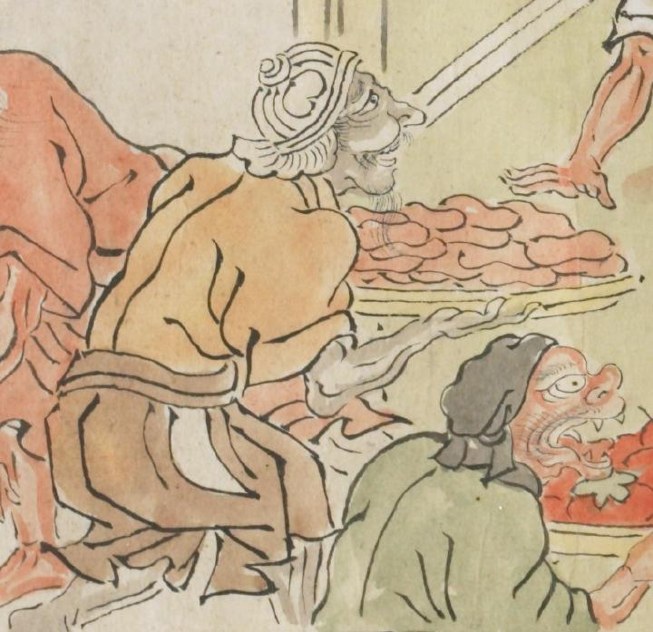

食べ物のようなものを運ぶ鬼。肉のようなものを運んでいる。兜のようなものを頭にかぶり、黄土色の衣服を身にまとっている。土色の肌をしている。
出典：親書誌：U426_nichibunken_0079：酒天童子絵巻；シュテンドウジエマキ／日付：2006／資源識別子：U426_nichibunken_0079_0008_0008
Copyright (c)2010- International Research Center for Japanese Studies, Kyoto, Japan. All rights reserved.